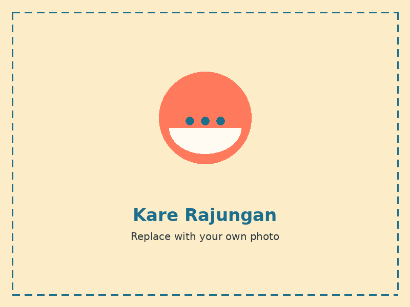
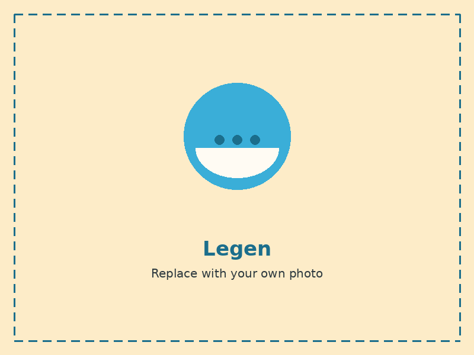
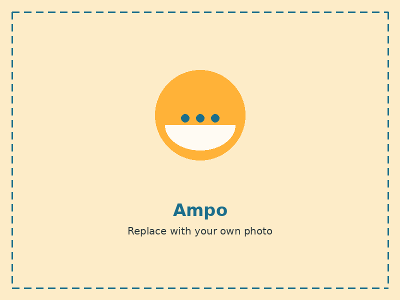

Kare Rajungan
A coconut curry cooked with rajungan, a type of small blue swimming crab. It has a rich, slightly spicy broth and is usually served with warm rice, a good choice for anyone who enjoys seafood.

Legen
A naturally sweet drink tapped from the flower of the siwalan palm. It has a light, slightly tangy taste and is best served cold on a hot afternoon, which is common along the coast.

Ampo
A traditional snack made from selected clay soil that is cleaned and then baked until crisp and fragrant. It is one of the more unusual dishes here and is rarely found outside Tuban.